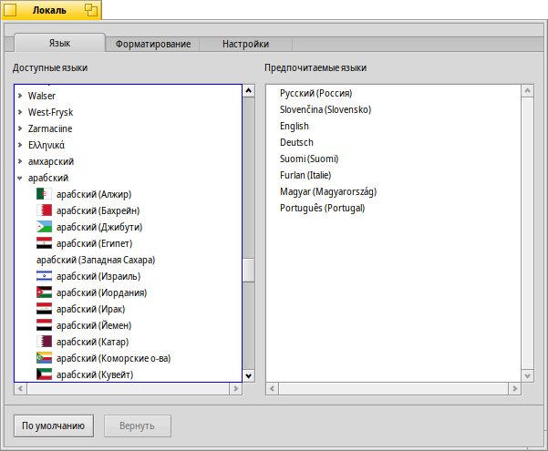
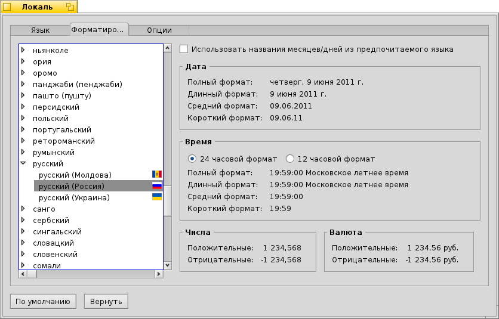

Русский
Русский Français
Français Deutsch
Deutsch Italiano
Italiano Español
Español Svenska
Svenska 日本語
日本語 Українська
Українська 中文 ［中文］
中文 ［中文］ Português
Português Suomi
Suomi Slovenčina
Slovenčina English
English Локаль (Locale)
Локаль (Locale)
| Расположение в Deskbar: | ||
| Расположение в Tracker: | /boot/system/preferences/Locale | |
| Настройки хранятся по адресу: | ~/config/settings/Locale settings |
Система интернационализации Haiku не только замещает текст на их переведённый, но также выполняет ряд комплексных задач - форматирование чисел, даты, и времени в соответствии с выбранным вами языком.
 Язык
Язык
Haiku переведена на ряд языков, к сожалению, пока что не полностью. Поэтому, вы можете выбрать более одного языка в качестве Предпочитаемых языков. Если перевод какого-либо текста отсутствует в выбранном языке, то он будет замещён переводом из следующего по списку языку в колонке Предпочитаемые языки. Английский является языком по умолчанию в таких случаях.
На примере выше предпочтительным языком является Русский. Если будет отсутствовать перевод каких-либо строк, то будет загружен украинский эквивалент, но если и в украинском будет отсутствовать перевод, то будет подставлен оригинальный текст на английском.
Также, как вы можете наблюдать в колонке слева, каждый язык подразделяется на подгруппы, которые соответствуют разным диалектам.
Форматирование
На вкладке вы можете задать форматирование даты, времени, чисел. Эти настройки устанавливаются независимо от предпочтительного языка.
Рассмотрим ситуацию, вы русский, находящийся на Украине. Таким образом, ваш предпочтительный язык будет русский, а форматирование чисел, дат и времени украинское.
Также, если вам более удобно использовать русские наименования дней недели и месяцев, вы можете переопределить эти значения, отметив флажок , который находится в верхней части окна.
Конечно же, выше приведённый пример может и не столь часто используемый, но отлично демонстрирует гибкость системы.
Опции
Последняя вкладка Опции содержит флажок . Включите его, если хотите чтобы на равне с графическим интерфейсом были переведы и названия стандартных приложений, панелей настроек, а также стандартных папок. Отключив, его весь графический интерфейс будет переведён на предпочтительный язык, а названия папок и приложений на английском языке.
Изменения применяют на лету, хотя некоторые запущенные приложения потребуется перезапустить для того чтобы увидеть результат.
| сбросить текущие настройки и установить их на значения по умолчанию. | ||
| вернуть настройки, которые были установлены до запуска панели настройки. |